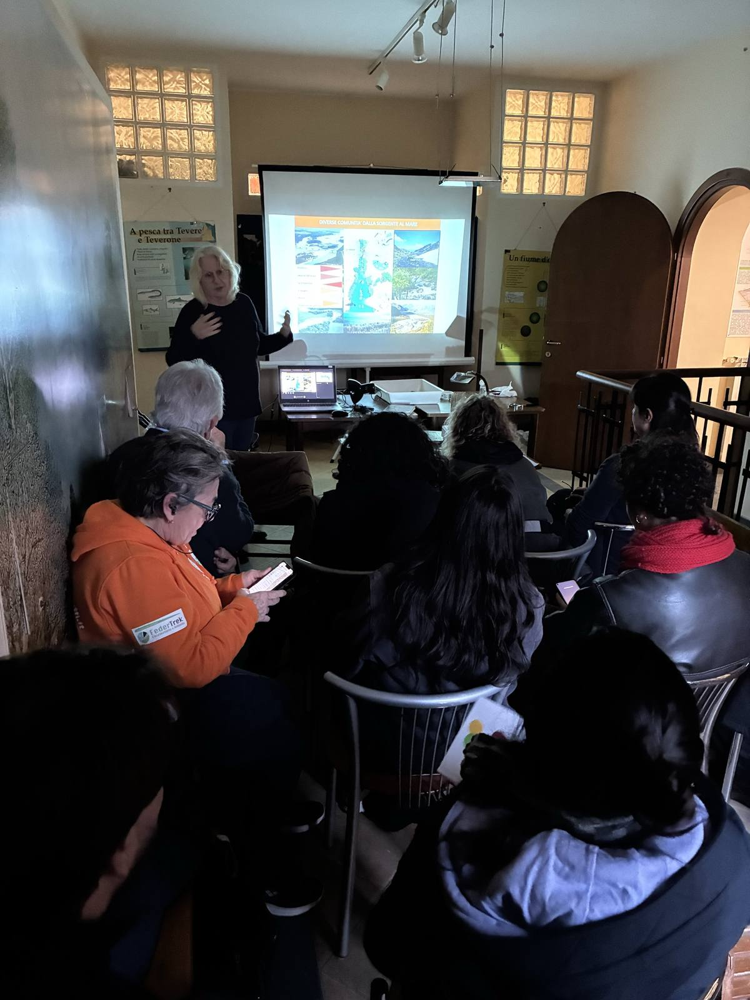

Un report per capire come sta l'Aniene
La presentazione del report di monitoraggio e quello che i dati raccontano sullo stato di salute del fiume.
Contatti
Chi fa parte della rete, come segnalare qualcosa che hai visto sul fiume e dove seguire gli aggiornamenti sullo stato dell'Aniene.

I progetti
Le associazioni, gli enti e i sostenitori che hanno preso parte alle campagne di monitoraggio, progetto per progetto.
Il progetto pilota, realizzato all'interno del programma europeo Citizen Science ACTION (Horizon 2020).
Il monitoraggio civico del Tevere e dell'Aniene, sostenuto dal programma Periferiacapitale.
La campagna annuale coordinata da Insieme per l'Aniene, finanziata dal programma Periferiacapitale della Fondazione Charlemagne.
La rete si allarga: punti fissi, campagne in gommone sulle immissioni e la sperimentazione sui macroinvertebrati.
Supervisione scientifica. La validazione scientifica dei dati raccolti è a cura della Dott.ssa Bruna Gumiero, ecologa fluviale dell'Università di Bologna.
Scrivici
Hai visto uno scarico, una discarica, una moria di pesci o qualcosa che non torna lungo il fiume? Scrivici: ogni segnalazione viene letta e, quando possibile, verificata durante le uscite di monitoraggio.
Aggiornamenti
Gli aggiornamenti sullo stato del fiume, le campagne di monitoraggio e le iniziative della rete. Qui raccogliamo gli articoli pubblicati man mano che i dati vengono validati e restituiti.
La presentazione del report di monitoraggio e quello che i dati raccontano sullo stato di salute del fiume.
Resta aggiornata, resta aggiornato. Per ricevere gli aggiornamenti sulle prossime campagne di monitoraggio e sulle restituzioni pubbliche, scrivici all'indirizzo qui sopra indicando «bollettino dell'Aniene» nell'oggetto.